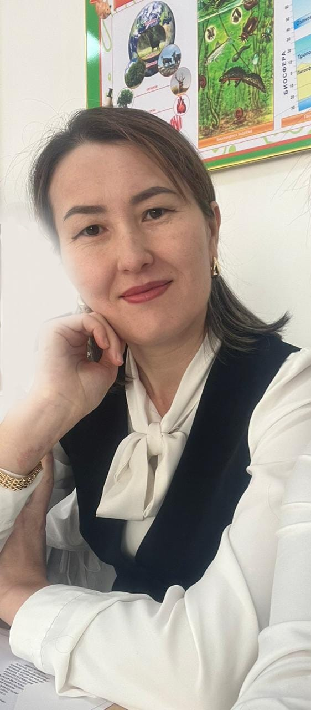

Бейімделу, сенімділік және мінез-құлық бойынша қолдау.
Басты бет
Раимқұлова Гүлжан Жұмағалиевна
Мектеп психологы
📌 Балалардың эмоционалдық дамуы мен психологиялық саулығын қолдау – менің басты мақсатым.
📌 Әр бала – ерекше тұлға.

👩🏫 Мен туралы
Мен, Раимқұлова Гүлжан Жұмағалиевна, 20 жылдық тәжірибесі бар мектеп психологымын.
- 🎓 Білімі: Психология (Қ. Жұбанов атындағы АМУ)
- 📍 Жұмыс орны: «№6 Хромтау гимназиясы» КММ
📚 Менің бағыттарым
Эмоцияны басқару, уайым мен күйзеліс деңгейін төмендету.
Отбасылық қарым-қатынасты жақсарту, балаға дұрыс қолдау көрсету.
Тәуекелді жағдайларды ерте анықтау және алдын алу жұмыстары.